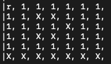
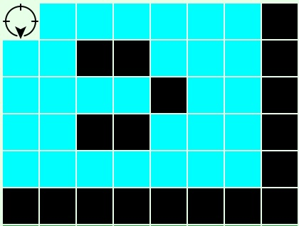
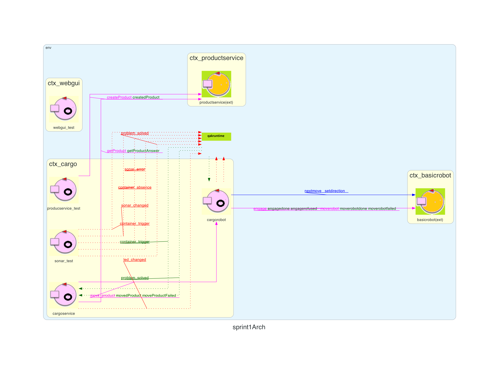

L'obiettivo prefissato di questo sprint è quello di analizzare i requisiti dei componenti cargoservice e cargorobot e di ciò che sta dietro a questi. Analizzeremo il problema e affronteremo un'elaborazione di progetto. Definiremo quali sono le interazioni tra questi componenti e il resto del sistema, ovvero sia ciò che i componenti comunicheranno con l'esterno sia ciò che riusciranno a digerire. Al termine di questo sprint, verrà redatto un piano di test per verificare che i componenti funzionino come previsto.
I requisiti che andremo prima ad analizzare e poi ad implementare in questo sprint sono:
Un sistema in grado di ricevere una richiesta di carico di un prodotto, accettarla o rifiutarla. Il prodotto contiene un PID associato e il sistema deve essere in grado di verificarne la presenza nel database e il peso che non deve superare la costante MAXLOAD.
Un sistema che riesca ad effettuare un carico completo.
Un sistema che sia in grado di interrompere ogni attività in caso di malfunzionamento. Ovvero in caso di sollevamento di un evento di guasto da parte del sonar, il sistema deve essere in grado di interrompere ogni attività e, una volta risolti i problemi, farle ripartire.
In questo Sprint ci siamo concentrati sull'analisi dei due componenti cargoservice e cargorobot. Abbiamo analizzato il problema e le interazioni che questi componenti avranno con il resto del sistema.
Il cargoservice è il componente che si occuperà di gestire le richieste di carico e scarico dei container. Le richieste arriveranno da un componente esterno( il sonar emetterà un evento) e il cargoservice dovrà elaborarle in base a diversi fattori tra cui la disponibilità degli slot, il peso totale dei container e l'ordine di arrivo, per poi accettarle o rifiutarle. Verrà modellato come un orchestrator: si occuperà di coordinare le attività del cargorobot, di gestire le richieste di carico in base allo stato del led e infine di comunicare con la web-gui per permettere l'interazione e il controllo da parte del committente. Il cargoservice riceve anche eventi dal sonar (mock del sensore) che simulano la presenza o assenza del container, gestendo guasti e ripristini.
Nello sprint0 non è stato modellato nessun attore per la gestione separata dell'hold. La logica di funzionamento è stata invece implementata all'interno di cargoservice.
Il ciclo di funzionamento del cargoservice sarà il seguente:
Ricezione del PID del prodotto (container) all'interno di una richiesta di carico grazie all'evento di container_trigger sollevato dal sonar.
Verifica del peso tramite una richiesta all'attore productservice. In questa richiesta viene inserito il PID del prodotto del quale si vuole conoscere il peso.
La risposta di productservice (getProductAnswer)può essere di due tipi:
Una volta ottenuto il peso la procedura di carico viene eseguita sotto le seguenti condizioni:
MAXLOAD (CURRENTLOAD + PRODUCT_WEIGHT <= MAXLOAD)Dunque la risposta che cargoservice darà alla richiesta di carico sarà:
Per aggiornare la webgui sullo stato dell'hold, ad ogni cambiamento di stato( slot_changed, led_changed, sonar_changed) viene aggiornata la risorsa Coap associata. Prevediamo che la webgui si connetterà e leggerà gli update in modo da avere un comportamento passivo e ininfluente per il nostro cargoservice.
QActor cargoservice context ctx_cargo{
State start initial{
println("[cargoservice] STARTED ") color yellow
}
Goto waiting_for_request
State waiting_for_request{
println("[cargoservice] waiting for request") color yellow
}
Transition t0
whenRequest load_product -> check_product
whenInterruptEvent sonar_error -> stop
whenEvent container_trigger -> check_product
State stop{
onMsg(sonar_error:sonar_error(CAUSA)){
println("[$name] sonar ha emesso un errore causa: $M") color yellow
emit led_changed : led_changed(Acceso)
updateResource[#"led_changed(Acceso)"#]
}
}
Transition t0
whenEvent problem_solved -> resume
State resume{
onMsg(problem_solved:problem_solved(CAUSA)){
[# val M=payloadArg(0)#]
println("[$name] sonar ha risolto l'errore causa: $M") color yellow
//Il sonar si è fixato e quindi ora metto il led a spento
emit led_changed : led_changed(Spento)
updateResource[#"led_changed(Spento)"#]
updateResource[#"sonar_changed(DFREE)"#]
}
returnFromInterrupt
}
State check_product{
onMsg(container_trigger: container_trigger(X)){
println("[cargoservice] check del prodotto")
[#
val ID=payloadArg(0).toInt()
#]
request productservice -m getProduct:product($ID)
updateResource[#"sonar_changed(DBUSY)"#]
}
}
Transition t0
whenReply getProductAnswer -> check_load
whenInterruptEvent sonar_error -> stop
State check_load{
onMsg(getProductAnswer: product(JsonString)){
println("[cargoservice] arrivato peso")
[#
val Product=payloadArg(0)
Product_weight = main.java.Product.getJsonInt(Product, "weight")
#]
}
}
Goto checkSlot if [#CURRENT_LOAD+ Product_weight <= MAX_LOAD #] else too_much_weight
State too_much_weight{
println("Il carico eccederebbe maxload, non è possibile eseguire la load") color yellow
}
Goto waiting_for_request
State checkSlot{
println("[cargoservice] ingresso move product") color yellow
[#
CURRENT_LOAD += Product_weight
Reserved_slot=0
for(i in 0..4){
if (Taken_slot[i]=="false") {
Reserved_slot = i+1
Taken_slot[i]="true"
break;
}
}
#]
}
Goto moveProduct if [#Reserved_slot!=0#] else slotEsauriti
State slotEsauriti{
println("[$name] slot esauriti") color yellow
}
State moveProduct{
request cargorobot -m move_product:product($Reserved_slot)
println("[cargoservice] richiesta di move al cargo robot mandata") color yellow
updateResource[#"current_weight($CURRENT_LOAD)"#]
}
Transition t0
whenReply movedProduct -> load_finished
whenInterruptEvent sonar_error -> stop
State load_finished{
onMsg(movedProduct:result( SLOT )){
println("Load completata il robot è in home ")
}
}
Goto waiting_for_request
}
In caso di evento scatenato dal Sonar (es. malfunzionamento, emergenza) il cargoservice deve interrompere ogni attività in corso e attendere ulteriori istruzioni. Sonar in questo sprint sarà un mock.
Ogni volta che lo stato interno della hold cambia, cargoservice emetterà degli eventi che permetteranno alla web-gui di aggiornare dinamicamente lo stato dell'hold visualizzato.
Il cargorobot gestisce il basicrobot colmando l'abstraction gap che si individua all'interno di basicrobot. Ovvero portando il DDR dalla semplice capacità di muoversi all'interno della mappa fornita alla possibilità di eseguire operazioni di carico e scarico dei container (eseguibili sotto forma di messaggi grazie all'implementazione sotto forma di attore). Ha conoscenza perciò della posizione degli slot oltre alle informazioni della stiva (dimensione, ostacoli, perimetro, posizionamento dell'IOport).
Il cargorobot può inviare delle richieste al basicrobot:
Il cargorobot dovrà condividere con il basicrobot la conoscenza della stiva. Il basicrobot fornito dal committente possiede una sua modellazione dell'hold che consiste in un rettangolo di celle della dimensione del robot, gli ostacoli(i nostri slot), il posizionamento dell'IOport e il led.
La hold si presenta come una griglia dove ogni quadrato rappresenta una cella di dimensione pari a quella del robot

La posizione degli slot e dell'IOport secondo le coordinate con cui viene modellata la hold all'interno di basicrobot sono riportate qui sotto.
La posizione (0,0) rappresenta la HOME del robot, ovvero il punto di partenza e ritorno dopo ogni operazione. Gli slot sono posizionati in coordinate fisse all'interno della stiva, ad esempio:

La modellazione del cargorobot sarà la seguente:
Il movimento del robot viene gestito tramite funzionalità messe a disposizione da basicrobot24. Cargorobot si occuperà di inviare i comandi di movimento tramite messaggi e di gestire le risposte che riceverà da basicrobot. Tramite il messaggio moverobot(X,Y) sarà possibile definire la coordinata di destinazione del robot, basicrobot si occuperà di calcolare il percorso e di muovere il robot. Cargorobot attenderà la risposta di basicrobot per sapere se l'operazione è andata a buon fine o se è fallita (es. ostacolo imprevisto).
Le coordinate di posizionamento del robot sono memorizzate all'interno di basicrobot(disponibili tramite messaggio), mentre il posizionamento del degli slot e dell'IOport sono memorizzate all'interno di cargorobot.
QActor cargorobot context ctx_cargo{
State start initial{
delay 30000
println("[cargorobot] STARTED ") color yellow
request basicrobot -m engage:engage($Myname,340)
}
Transition t0
whenReply engagedone -> waiting_for_request
whenReply engagerefused -> engage_refused
whenInterruptEvent sonar_error -> stop
State stop{
emit alarm : alarm(X)
updateResource [#"alarm(X)"#]
println("[$name] robot stopped")color yellow
}
Transition t0
//whenReply moverobotfailed-> resume
whenEvent problem_solved -> resume
State resume{
updateResource [#"problem_solved(solved)"#]
forward basicrobot -m nextmove:nextmove(l)
//request basicrobot -m engage:engage($Myname,340)
}
Transition t0
whenReply moverobotfailed-> reengage
whenReply engagedone -> reengage
State reengage{
println("$name reengage done")
}
Goto riprendocosaprecedente
State riprendocosaprecedente{
println("[$name] robot stava consegnando e ora riprenderà il lavoro")color yellow
request basicrobot -m moverobot:moverobot($X,$Y)
println("[$name] robot rinizia il lavoro")color yellow
returnFromInterrupt
}
Transition t0
whenReply moverobotdone-> continuaJob
State continuaJob{
println("non sto facendo niente torno al mio lavoro")color yellow
returnFromInterrupt
}
State engage_refused{
onMsg(engagerefused:engagerefused(ARG)){
[#val Msg=payloadArg(0)#]
println("[cargorobot] Engage refused motivo:$Msg")
}
}
State waiting_for_request{
[#delivering = false#]
onMsg(engagedone:engagedone(ARG)){
println("[cargorobot] waiting for request") color yellow
}
}
Transition t0
whenRequest move_product -> goto_IOPort
whenInterruptEvent sonar_error -> stop
State goto_IOPort{
onMsg(move_product: product(SLOT)){
[# CurrentRequestSlot = payloadArg(0).toInt()
X = posizione["IOport"]!![0]!!
Y = posizione["IOport"]!![1]!!
#]
println("[cargorobot] Ricevuto move_product, slot richiesto: $CurrentRequestSlot") color yellow
println("Posizione X: $X Y: $Y") color yellow
request basicrobot -m moverobot:moverobot($X,$Y)
[#delivering = true
#]
println("sent ") color yellow
}
}
Transition t0
whenReply moverobotfailed-> return_home_anyway
whenReply moverobotdone -> goto_slot
whenInterruptEvent sonar_error -> stop
State goto_slot{
println("gotoslot") color yellow
delay 3000
onMsg(moverobotdone : moverobotdone(ok)){
[#
X = posizione[CurrentRequestSlot.toString()]!![0]!!
Y = posizione[CurrentRequestSlot.toString()]!![1]!!
#]
println("[gotoslot] position received") color green
request basicrobot -m moverobot:moverobot($X,$Y)
updateResource[#"sonar_changed(DFREE)"#]
[#delivering = true#]
println("gotoslot delivering: $delivering | position x: $X y: $Y") color green
}
}
Transition t0
whenReply moverobotdone -> arrived_at_slot
whenReply moverobotfailed-> return_home_anyway
whenInterruptEvent sonar_error -> stop
State arrived_at_slot{
println("Arrived at slot $CurrentRequestSlot")
println("Direction") color blue
[#
var Direction = orientamento[CurrentRequestSlot.toString()]!!
#
]
if [#CurrentRequestSlot != 3 && CurrentRequestSlot != 4#]{
forward basicrobot -m setdirection : dir($Direction)
println("Direction $Direction") color blue
//Si occupa lo slot quindi faccio una emit di cambio di stato ( Serve a WebGui)
emit slot_changed : slot_changed($CurrentRequestSlot,true)
updateResource[#"slot_changed($CurrentRequestSlot,true)"#]
}
}
Goto return_home
State return_home{
delay 3000
//onMsg(moverobotdone : moverobotdone(ok)){
[#
X = posizione["HOME"]!![0]!!
Y = posizione["HOME"]!![1]!!
#]
request basicrobot -m moverobot:moverobot($X,$Y)
[#delivering = true#]
}
Transition t0
whenReply moverobotdone -> arrived_at_home
whenReply moverobotfailed-> load_failed
whenInterruptEvent sonar_error -> stop
State arrived_at_home{
println("Arrived at home")
println("Direction") color blue
[#
var Direction = orientamento["HOME"]!!
#
]
forward basicrobot -m setdirection : dir($Direction)
println("Direction $Direction") color blue
}
Goto load_completed
State return_home_anyway{
println("returnhomeanyway")
delay 3000
onMsg(moverobotfailed:fail(PLANDONE)){
[#
X = posizione["HOME"]!![0]!!
Y = posizione["HOME"]!![1]!!
#]
request basicrobot -m moverobot:moverobot($X,$Y)
[#delivering = true#]
}
}
Transition t0
whenReply moverobotdone -> load_failed //????? Chiedi con Luca
whenReply moverobotfailed-> load_failed
whenInterruptEvent sonar_error -> stop
State load_completed{
println("[$name] load completed")
replyTo move_product with movedProduct:result(ok)
}
Goto waiting_for_request
State load_failed{
println("[$name] load failed")
replyTo move_product with moveProductFailed:fail(failed)
}
Goto waiting_for_request
}
Può gestire eventi stop e resume ricevuti dal cargoservice. Durante stop emette un alarm e sospende il basicrobot.
A questo punto inizialmente il problema analizzato è stato la ripresa dell'attività dopo un evento di interruzione. Abbiamo notato che è necessario memorizzare lo stato di spostamento del robot. Poiché al momento della ripresa dell'attività il robot non è in grado (se non siamo noi a fornirgli queste informazioni) di sapere che cosa stava facendo prima dell'interruzione. Dunque tramite una variabile di stato interna al cargorobot, andremo a memorizzare lo stato del robot (es. in movimento o meno). In questo modo alla ripresa dell'attività se basicrobot precedentemente si stava muovendo riceverà una moverobot altrimenti rimarrà in attesa di un eventuale richiesta di movimento. Una volta analizzato il problema demandiamo all'implementatore la strada migliore da intraprendere.
Il cargorobot deve tornare in HOME e notificare al cargoservice il completamento dell'operazione.
In caso di evento di blocco ricevuto (es. malfunzionamento, emergenza) il cargorobot deve interrompere ogni attività in corso e attendere ulteriori istruzioni. Questo ci porta alla conclusione di dover gestire e mantenere memorizzate alcune informazioni:
Il productservice è un componente che viene gia fornito dal committente per la registrazione e la gestione dei prodotti all'interno di un relativo Database. Esso permette la registrazione, la cancellazione e la ricerca di prodotti tramite il loro PID. Ogni prodotto ha associato un peso che verrà utilizzato dal cargoservice per verificare che il carico totale non superi la costante MAXLOAD. Prodotto invece è l'entità da gestire. Gli attributi di un prodotto sono:
Come detto in precedenza ProductService è un componente già fornito dal committente, pertanto non verrà implementato da noi, ma ci limiteremo ad utilizzarlo per le nostre esigenze. Le interazioni che avremo con questo componente sono analizzate nel prossimo punto.
Context ctx_productservice ip [host="cargoserviceqak" port=8111]
Context ctx_basicrobot ip [host="basicrobot24" port=8020]
Context ctx_cargo ip [host="localhost" port=8000]
Context ctx_webgui ip [host="webgui" port=8998]
Context ctx_sonarhost ip[host="sonarhost" port=8999]
ctx_cargo (host="localhost" port=8000)
├── cargorobot
├── cargoservice
└── productservice_test
ctx_basicrobot (host="basicrobot24" port=8020)
└── basicrobot (ExternalQActor)
ctx_productservice (host="cargoserviceqak" port=8111)
└── productservice (ExternalQActor)
ctx_webgui (host="webgui" port=8998)
└── webgui_test
ctx_sonar (host="sonarhost" port=8999)
└── sonar_test
(Messaggi gia presenti nell'attore fornito dal committente)
Dispatch cmd : cmd(MOVE)
Dispatch end : end(ARG)
Request step : step(TIME)
Reply stepdone : stepdone(V) for step
Reply stepfailed : stepfailed(DURATION, CAUSE) for step
Event sonardata : sonar( DISTANCE )
Event obstacle : obstacle(X)
Event info : info(X)
Request doplan : doplan( PATH, STEPTIME )
Reply doplandone : doplandone( ARG ) for doplan
Reply doplanfailed : doplanfailed( ARG ) for doplan
Dispatch setrobotstate: setpos(X,Y,D) //D =up|down!left|right
Request engage : engage(OWNER, STEPTIME)
Reply engagedone : engagedone(ARG) for engage
Reply engagerefused : engagerefused(ARG) for engage
Dispatch disengage : disengage(ARG)
Request checkowner : checkowner(CALLER)
Reply checkownerok : checkownerok(ARG) for checkowner
Reply checkownerfailed: checkownerfailed(ARG) for checkowner
Event alarm : alarm(X)
Dispatch nextmove : nextmove(M)
Dispatch nomoremove : nomoremove(M)
Dispatch setdirection : dir( D ) //D =up|down!left|right
Request moverobot : moverobot(TARGETX, TARGETY)
Reply moverobotdone : moverobotok(ARG) for moverobot
Reply moverobotfailed: moverobotfailed(PLANDONE, PLANTODO) for moverobot
Request getrobotstate : getrobotstate(ARG)
Reply robotstate : robotstate(POS,DIR) for getrobotstate
Request getenvmap : getenvmap(X)
Reply envmap : envmap(MAP) for getenvmap
(Messaggi già presenti nell'attore fornito dal committente)
Request createProduct : product(String)
Reply createdProduct: productid(ID) for createProduct
Request deleteProduct : product( ID )
Reply deletedProduct : product(String) for deleteProduct
Request getProduct : product( ID )
Reply getProductAnswer: product( JSonString ) for getProduct
Request getAllProducts : dummy( ID )
Reply getAllProductsAnswer: products( String ) for getAllProducts
//cargoservice
Request load_product : product(ID)
Reply loadedProduct : slot(SLOT) for load_product
//cargorobot
Request move_product : product(SLOT)
Reply movedProduct : result(SLOT) for move_product
Reply moveProductFailed : fail(failed) for move_product
Event stop : stop(X)
Event resume : resume(X)
Event alarm : alarm(X)
//sonar
Event container_trigger : container_trigger(X)
Event container_absence : container_absence(X)
Event sonar_error : sonar_error(CAUSA)
Event problem_solved : problem_solved(CAUSA)
Qak ci fornisce l'architettura di riferimento del prototipo che realizzeremo: 
Abbiamo simulato il funzionamento di alcune componenti del sistema che al momento non sono ancora state implementate. Abbiamo deciso di implementare tramite attori mock il comportamento del test Actor per la creazione dei prodotti e delle richiste di carico per una questione di comodità implementativa e ordine mentale, in quanto utilizzando lo stesso linguaggio di modellazione (QActor) ci è stato più semplice definire le interazioni tra i componenti.
Nella fase di test, viene mandata una richiesta dal componente di Test e gestita da cargoservice.
Il flusso di lavoro è il seguente:
test actor:
createProduct
|
createdProduct
|
cargoservice chiama productservice
|
cargorobot completa e notifica
|
cargoservice aggiorna stato
Aggiunto: attore sonar_test che simula il comportamento del sensore sonar, gestendo ciclicamente eventi di:
container_trigger)container_absence)sonar_error)problem_solved)
Lo scopo è testare la capacità del sistema di interrompere e riprendere le attività automaticamente.sonar_test --> cargoservice --> cargorobot --> basicrobot
↑ ↓
problem_solved stop/resume
Prevediamo un test anche per l'interazione con la web-gui.
Per la gestione dell'occupazione degli slot, abbiamo deciso di utilizzare una lista di booleani che rappresentano lo stato di ciascuno slot. In questo modo, possiamo facilmente verificare quali slot sono liberi e quali sono occupati. Inoltre, abbiamo definito delle variabili per tenere traccia del carico massimo e del carico attuale della stiva. Consideriamo il fatto che gli slot vengano occupati in maniera incrementale.
QActor cargoservice context ctx_cargo{
[#
var Taken_slot=arrayListOf("false","false","false","false","true")
val MAX_LOAD=500
var CURRENT_LOAD=0
var Product_weight = 0
var Reserved_slot = 0
#]
Spiegazione dell'implementazione della richiesta di carico prodotto, che coinvolge la comunicazione con productservice per ottenere il peso del prodotto.
State check_product{
onMsg(container_trigger: container_trigger(ID)){
println("[cargoservice] check del prodotto")
[#
val ID=payloadArg(0)
#]
request productservice -m getProduct:product($ID)
}
}
Il cargorobot al momento di ricezione di una richiesta di carico eseguirà sempre la pipeline di esecuzione.
Movimento all'IOport:
Movimento allo slot
Ritorno alla Home:
Attesa nuova richiesta o gestione richiesta in coda:
State goto_IOPort{
onMsg(move_product: product(SLOT)){
[# CurrentRequestSlot = payloadArg(0).toInt()
X = posizione["IOport"]!![0]!!
Y = posizione["IOport"]!![1]!!
#]
println("[cargorobot] Ricevuto move_product, slot richiesto: $CurrentRequestSlot") color yellow
println("Posizione X: $X Y: $Y") color yellow
request basicrobot -m moverobot:moverobot($X,$Y)
[#delivering = true
#]
println("sent ") color yellow
}
}
Transition t0
whenReply moverobotfailed-> return_home_anyway
whenReply moverobotdone -> goto_slot
whenInterruptEvent stop -> stop
State goto_slot{
println("gotoslot") color yellow
delay 3000
onMsg(moverobotdone : moverobotdone(ok)){
[#
X = posizione[CurrentRequestSlot.toString()]!![0]!!
Y = posizione[CurrentRequestSlot.toString()]!![1]!!
#]
println("[gotoslot] position received") color green
request basicrobot -m moverobot:moverobot($X,$Y)
[#delivering = true#]
println("gotoslot delivering: $delivering | position x: $X y: $Y") color green
}
}
Transition t0
whenReply moverobotdone -> arrived_at_slot
whenReply moverobotfailed-> return_home_anyway
whenInterruptEvent stop -> stop
State arrived_at_slot{
println("Arrived at slot $CurrentRequestSlot")
println("Direction") color blue
[#
var Direction = orientamento[CurrentRequestSlot.toString()]!!
#
]
if [#CurrentRequestSlot != 3 && CurrentRequestSlot != 4#]{
forward basicrobot -m setdirection : dir($Direction)
println("Direction $Direction") color blue
}
}
Goto return_home
State return_home{
delay 3000
//onMsg(moverobotdone : moverobotdone(ok)){
[#
X = posizione["HOME"]!![0]!!
Y = posizione["HOME"]!![1]!!
#]
request basicrobot -m moverobot:moverobot($X,$Y)
[#delivering = true#]
}
Transition t0
whenReply moverobotdone -> arrived_at_home
whenReply moverobotfailed-> load_failed
whenInterruptEvent stop -> stop
State arrived_at_home{
println("Arrived at home")
println("Direction") color blue
[#
var Direction = orientamento["HOME"]!!
#
]
forward basicrobot -m setdirection : dir($Direction)
println("Direction $Direction") color blue
}
Goto load_completed
State return_home_anyway{
println("returnhomeanyway")
delay 3000
onMsg(moverobotfailed:fail(PLANDONE)){
[#
X = posizione["HOME"]!![0]!!
Y = posizione["HOME"]!![1]!!
#]
request basicrobot -m moverobot:moverobot($X,$Y)
[#delivering = true#]
}
}
Transition t0
whenReply moverobotdone -> load_failed
whenReply moverobotfailed-> load_failed
whenInterruptEvent stop -> stop
Per la gestione della posizione e dello stato del robot, abbiamo definito delle variabili e delle mappe hash per tenere traccia delle coordinate degli slot e dell'orientamento del robot in ciascuna posizione.
QActor cargorobot context ctx_cargo{
[#
val Myname = "$name"
var CurrentRequestSlot = 0
var delivering = false
val posizione = hashMapOf(
"HOME" to arrayOf(0, 0),
"IOport" to arrayOf(0, 4),
"1" to arrayOf(1, 1),
"2" to arrayOf(1, 3),
"3" to arrayOf(4, 1),
"4" to arrayOf(4, 3)
)
val orientamento = hashMapOf(
"HOME" to "down",
"IOport" to "down",
"1" to "right",
"2" to "right",
"3" to "left",
"4" to "left"
)
var X = 0
var Y = 0
#]
Abbiamo impiegato in totale 40 ore di lavoro per completare questo sprint, suddivise tra le varie attività come segue: